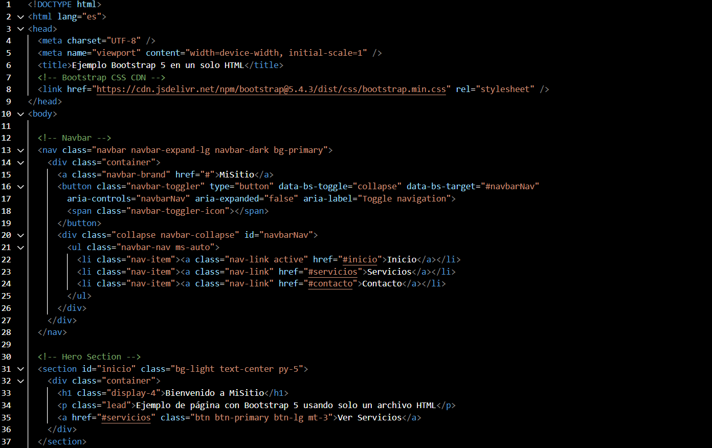

Resumen de la Semana
Esta semana fue la entrega de las exposiciones delegadas por el ingeniero a cargo del curso. Los temas tratados fueron: HTML básico y avanzado, CSS básico y avanzado, así como los frameworks Bootstrap y Tailwind CSS.

HTML Básico
Se introdujo el lenguaje HTML como base para crear páginas web, enfocándonos en su estructura, etiquetas y semántica.
- Estructura básica:
<!DOCTYPE>,<html>,<head>,<body> - Encabezados y párrafos:
<h1>a<h6>,<p> - Listas:
<ul>,<ol>,<li> - Imágenes y enlaces:
<img>,<a> - Comentarios:
<!-- comentario -->

HTML Avanzado
Aprendimos a trabajar con formularios, contenido multimedia y etiquetas semánticas modernas.
- Formularios:
<form>,<input>,<textarea>,<select> - Multimedia:
<video>,<audio>,<iframe> - Semántica:
<section>,<article>,<figure>
CSS Básico
Exploramos cómo aplicar estilos visuales con propiedades CSS esenciales.
- Colores, fuentes y tamaños
- Textos, márgenes, bordes y rellenos
- Sintaxis general: selectores y propiedades
CSS Avanzado
Aprendimos técnicas modernas como Flexbox, pseudoclases, animaciones y diseño responsive con media queries.
Bootstrap
Estudiamos el uso del sistema grid, componentes y utilidades de Bootstrap para diseñar páginas responsivas rápidamente.
Tailwind CSS
Descubrimos cómo crear interfaces con Tailwind usando clases utilitarias y cómo personalizar el diseño desde su configuración.
Ejercicios de Laboratorio
-
HTML Avanzado
-
CSS Avanzado
-
Bootstrap

-
Tailwind CSS
¿Qué Aprendí?
Consolidé conocimientos clave sobre HTML, CSS y frameworks como Bootstrap y Tailwind. Ahora puedo construir interfaces modernas, organizadas y responsivas, adaptadas a cualquier dispositivo.
¿Cómo Aprendí?
Mediante exposiciones, prácticas en Visual Studio Code, uso de herramientas como GitHub y trabajo colaborativo. Comprobé lo aprendido al desarrollar interfaces propias y personalizadas.